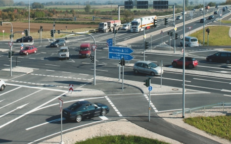

|
Heterogeneous Urban Traffic System Modelling
Summary
|
 |
A heterogeneous model for urban traffic system with signalized and non-signalized itersections
Developed based on Cell Transmission Model, where the dynamics of an urban traffic network controlled by traffic lights is described by a novel model, which inserts mixed logical constraints into a cell transmission flow dynamic model, capable of capturing the nonlinear relationship between each outgoing link flow rate and the corresponding upstream and downstream link capacities and the past traffic light signals
With the capability to describe heterogeneous intersections
Multiple features involved: traffic merging, speed limits, turning ratios, …
|
Contributions
A Macroscopic Model for Urban Traffic Systems
A traffic network is described by a flow dynamic model similar to the Daganzo's cell-transmission model.
A piece-wise constant speed function with respect to the duration of the green period is proposed for the traffic system model, which has been verified by the road test.
Our key contribution in this model is to describe each outgoing shift within each time interval as a nonlinear mixed logical switching function over the source link's density, the destination link's density and capacity, and the driver's potential psychological response to the past traffic light signals.
This outgoing shift model makes our approach applicable to both under-saturated and over-saturated situations.
A Heterogeneous Model for Urban Traffic Systems
In signalized intersections, recent history as well as flow dynamics are included to account to determine the green time period.
Non-signalized intersections, where vehicles stop before leaving the intersection. Contiguous vehicle sequences are grouped together and are served in a first come first serve basis.
A Distributed Computational Architecture
To overcome the high computational complexity involved in the centralized strategy, we propose a distributed strategy based on the Lagrangian multiplier method and the subgradient method.
This structure allows users to implement computational intelligence methodologies for solving the large scale optimization problem involved in urban traffic signal scheduling problem.
Reference
Y. Zhang, R. Su, Y. Zhang and C. Sun. “Modelling and Traffic Signal Control of Heterogeneous Traffic Systems.” arXiv, 2017.
Y. Zhang, R. Su, C. Sun. Modelling and traffic signal control of a heterogeneous traffic network with signalized and non-signalized intersections. 2017 IEEE Conference on Control Technology and Applications, Kohala Coast. 2017.
Y. Zhang, R. Su and K. Gao. “Urban Road Traffic Light Real-Time Scheduling.” The 54th IEEE Conference on Decision and Control (CDC’15), 2015.
Y. Zhang, Y. Su and R. Su. “Real-Time Scheduling in Urban Road Traffic Light Control.” 14th Asian Pacific Intelligent Transportation System Conference, 2015.
|